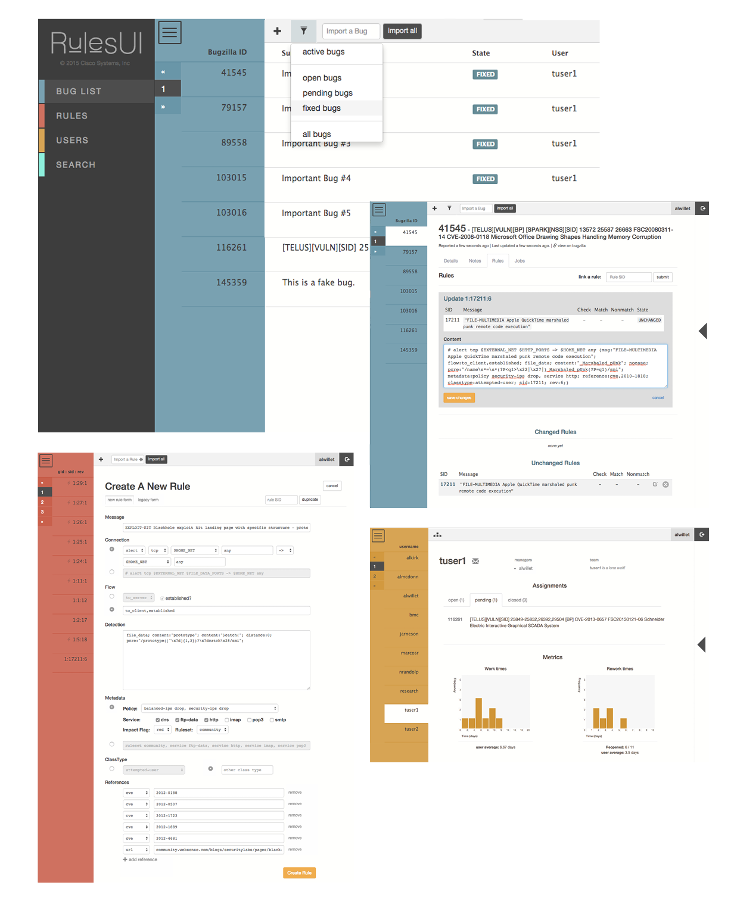

ClamAV rewrite
made with Jekyll, Sinatra, HTML, CSS, Javascript
graphics created with Adobe Illustrator
OBJECTIVE: To design a fresh, lightweight website for an open-source community-based malware scanner.
- Concise Reorganized 20+ pages of wordy, disorganized content into 5 organized, concise sections to help users easily access common resources.
- Branding Updated ClamAV logo and color scheme to reflect the personality of developers.
- Generated with Jekyll. Writing templates with Jekyll eliminates redundancy and inconsistency in static sites, and makes it easy for team members who don't write code to edit the site content.
- Optimized for any connection speed. ClamAV is downloaded daily by users all over the world, so keeping 90% of the page content static ensures a fast experience for everyone.
- Client-side file uploads and processing submissions in the background keep heavier functionality from slowing down regular site traffic.

RulesUI (in progress)
OBJECTIVE: To create an integrated workspace for tracking bugs in the rules used by an antivirus scanner. Tasks include viewing bugs, editing and testing associated files, and collecting statistics to track team performance.
made with EmberJS, Ruby on Rails (API)
- Workflow-driven. understanding of users’ workflow led to prioritizing an uncluttered table-based layout designed to help users solve bugs by providing access to the most related information be visible together with as few clicks as possible.
- Responsive Client-side UI Taking advantage of client-side data storage, actions like viewing and changing files or working with comlex multipart forms can be done without refreshing the page.
- Integration with Rails API
- Data visualization using custom Ember components
Snort.org FAQ
made with Ruby on Rails, Resque, Tire
OBJECTIVE: To download, index, publish, and update faq documents that are written and edited collectively on github.
- All faq documents are viewable in an attractive way right on Snort.org
- Synced with github Downloads latest FAQ documents from github to the database, and checks for updates with a chron job.
- Searchable using Tire, and elasticsearch implementation for ruby.
- Publish/Unpublish control which documents are searchable and visible on the index from the admin interface.
WV Water Crisis
made with HTML, CSS, Javascript
graphics created with Adobe Photoshop
OBJECTIVE: To create a platform that juxtaposes personal stories with maps and historical data in order to explain Southeastern West Virginia’s experience with water contamination.
- A narrative and a resource. Information is presented as in article format on the main page to present an argument about, while re resources page re-presents the information in downloadable formats so others can use it their own story.
- Interactve Maps Hand-drawn maps with information overlays synthesize geographical data, community testimony, and statistics in an evocative and honest manner.
- Multimedia pop-ups. Clickable audio and video clips add further layers of information and keep ("21st century") readers engaged.
Advocates for a Safe Water System
customized Squarespace template, HTMl&CSS, Javascript
photo editing using with Adobe Photoshop
OBJECTIVE: To create an enticing and memorable homepage for a grassroots advocacy group that would be user-friendly enough to be maintained by volunteers, intergrate well with online accounts, and was achievable with budget constraints.
- Energetic Identity using bright colors and flat design to appeal to contemporary audiences, and showcasing many event photos to evoke a populist movement identity.
- Customized Template Improved upon the basic Bedford template by including a contact form and a custom paypal connection to the header of the cover page.
- Mailchimp, Paypal, Google Drive Integration with third party services for server-side action keeps the mailing list, donations, and file downloads low-maintanence.